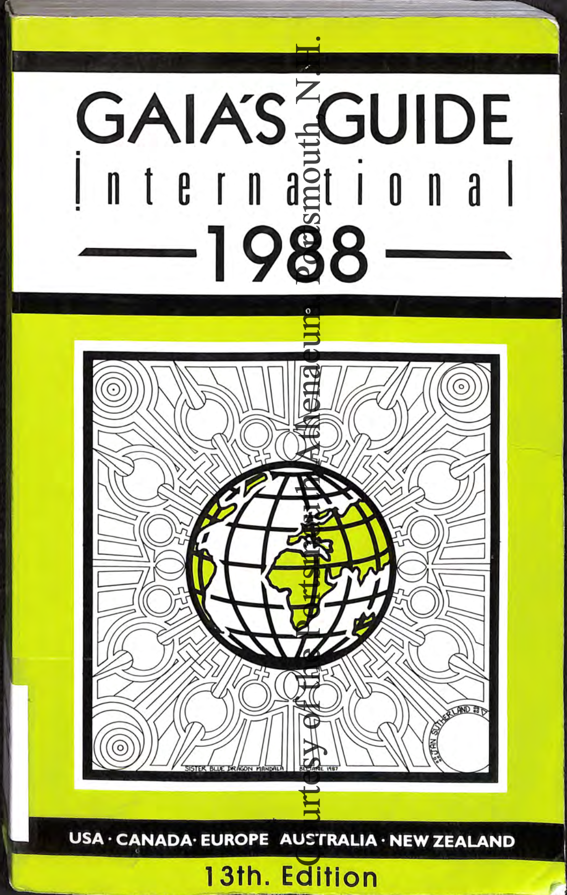
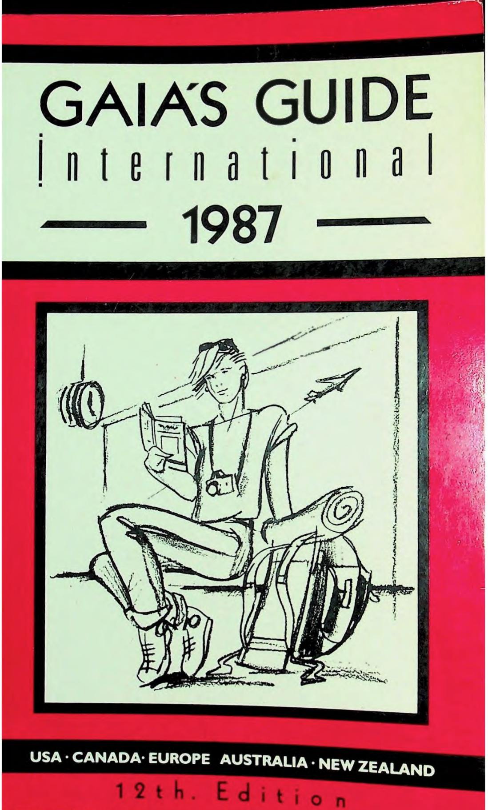

Gaia's Guide sent queer women overseas with a paperback and a list of addresses. This atlas puts thirteen editions of bars, bookstores, and dropsites back on the map, alongside the feminist history that shaped them.


Browse listings by city and see where the guide's network stretched.
Search and filter every listing pulled from thirteen digitized editions.
Read how listings were sourced, verified, and where the archive stays silent.
The atlas plots every listing from thirteen editions of Gaia's Guide — bars, bookstores, community centers, and dropsites — against the years they operated.
Published from 1973 into the early 1990s, Gaia's Guide was a paperback travel directory for lesbians, circulated hand to hand at the same moment second-wave feminism was reshaping women's public and private lives.